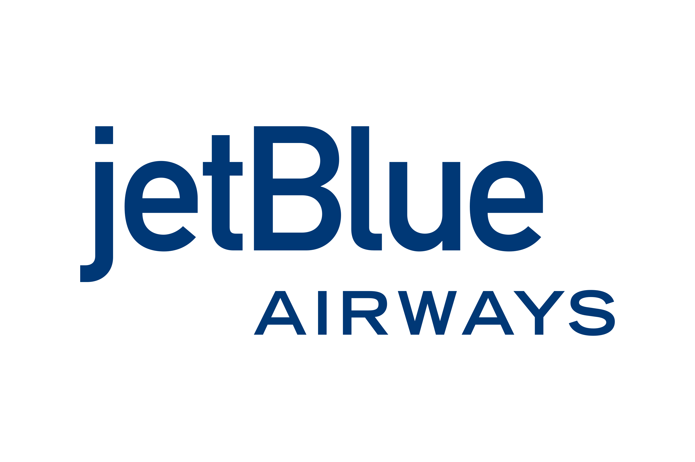

JetBlue
Cég története:
JetBlue naponta több mint 1000 járatot üzemeltet, és 100 belföldi és nemzetközi célállomást szolgál ki az Egyesült Államokban, Kanadában, Mexikóban, a Karib-térségben, Közép-Amerikában, Dél-Amerikában és Európában. A JetBlue-t 1998. augusztusában alapították Delaware-ben, a központja pedig Forest Hillsben, Queensben található. David Neeleman alapította a céget 1999. augusztusában "NewAir" néven.
A JetBlue egy alacsony költségvetésű légitársaságként müködik, kezdetben az alacsony költségű utazások elveit követte, de kiemelkedett a szolgáltatásaival, mint például fedélzeti szórakoztatás, TV minden ülésnél és a Sirius XM műholdas rádió.

Flotta:
A JetBlue flottája modern és főként Airbus A320 és A321 típusokból áll. Az újabb gépek és a folyamatos flottafrissítés célja a hatékonyság és az üzemanyag-hatékonyság növelése, valamint a korszerű utazási technológiák bevezetése.Szolgáltatásai:
- új és hatékony repülőgépek
- magas repülőgépkihasználtság
- ponttól pontig tartó útvonalak
- alacsony terjesztési költségek
- nem tagja nagy légitársasági szövetségnek
- Több kabinosztályt kínál
- Ingyenes fedélzeti szórakozás és